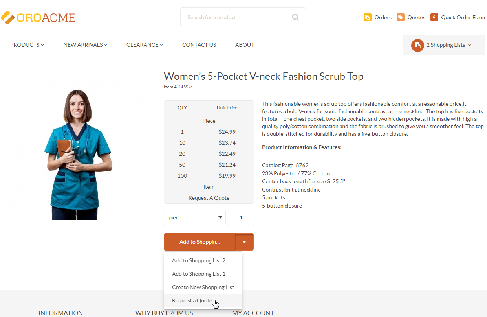
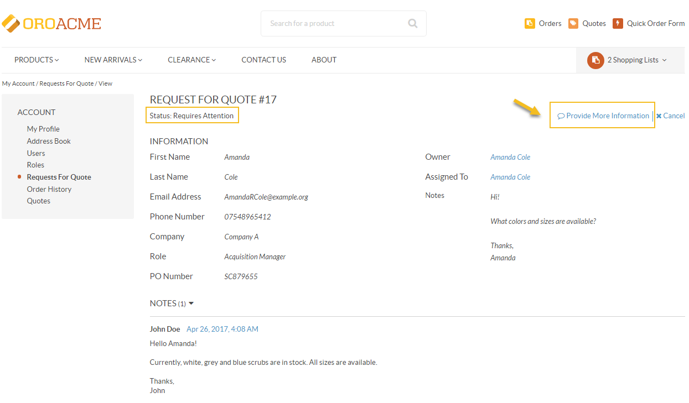
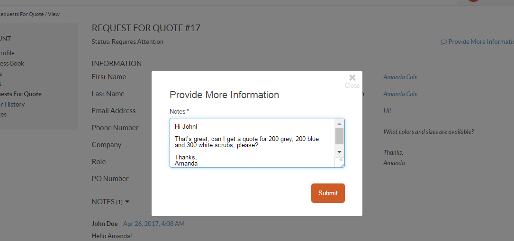
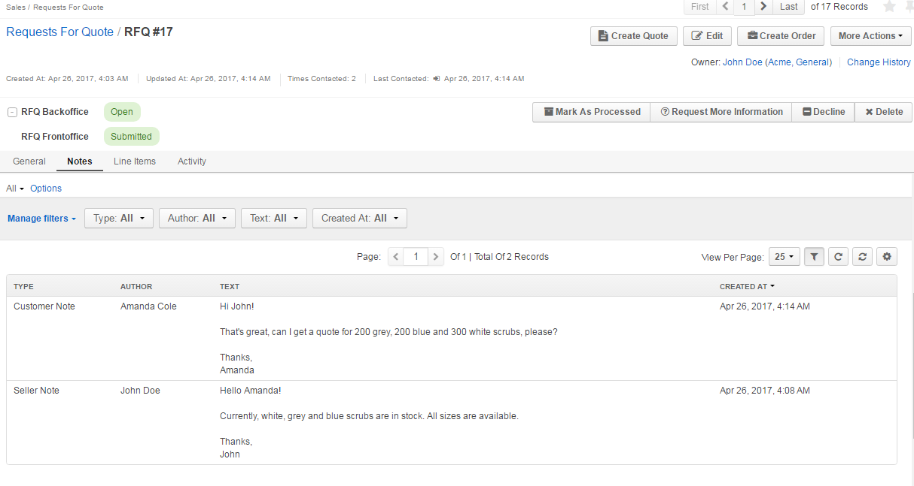

RFQ Frontoffice Workflow¶
Overview¶
RFQ (Request For Quote) Frontoffice Workflow is a system workflow that defines the sequence of steps and transitions that an RFQ can go through in the front store and the management console.
To reach the workflow:
- Navigate to System > Workflows in the main menu.
- Click RFQ Frontoffice to open the flow.
On the RFQ Frontoffice page, you can perform the following actions:
- Clone the workflow - click Clone to clone the workflow.
- Deactivate the workflow - click Deactivate to deactivate the workflow.

Within the Workflows grid, you can perform the following actions for the RFQ Frontoffice workflow:
- Clone the workflow:
- View the workflow:
- Deactivate the workflow:

RFQ Statuses¶
RFQ Backoffice and Frontoffice workflows are interconnected. When the RFQ Backoffice and Frontoffice workflows are active, the following statuses are available:
Internal Statuses (Marked RFQ Backoffice on the RFQ page) are the statuses displayed in OroCommerce to the sales personnel:
- Open
- Processed
- More Information Requested
- Declined
- Cancelled
- Deleted

Note
RFQs with internal status Deleted are not visible in the front store.
Customer Statuses (Marked RFQ Frontoffice on the RFQ page) are the statuses displayed to customers in the front store. In the management console, they are visible on the view page and in the grid:
- Submitted
- Pending Approval
- Requires Attention
- Cancelled


Note
Neither internal nor customer statuses can be edited or deleted.
Statuses are also displayed in the grid:

Note
You can add and remove columns in the grid by clicking on the far right of the grid.

Steps and Transitions¶
The RFQ Frontoffice consists of the following steps and transitions:
- Steps:
- Submitted
- Requires Attention
- Cancelled
- Transitions:
- For Submitted: Cancel, Decline, Request More Information
- For Requires Attention: Cancel, Decline, Provide More Information
- For Cancelled: Resubmit, Reopen
Note
Please note that the Request For Information, Reopen and Decline transitions are visible only in the management console for the sales personnel.

As an illustration, let us go through a sample flow to see RFQ Frontoffice in action:
A customer user creates an RFQ in the front store. Once the RFQ is sent, its customer status is marked as Submitted.

In the management console, a sales representative sees the RFQ and requests more information. The RQF is now in the Requires Attention customer status.

The customer user receives the request in the front store, clicks Provide Information in the right corner of the page and replies to the message. The customer status is now Submitted.
 The sales representative reads the reply in the Notes section of the RFQ page, marks the RFQ processed and creates a quote from the same page. The RFQ is now in the Processed customer status.
